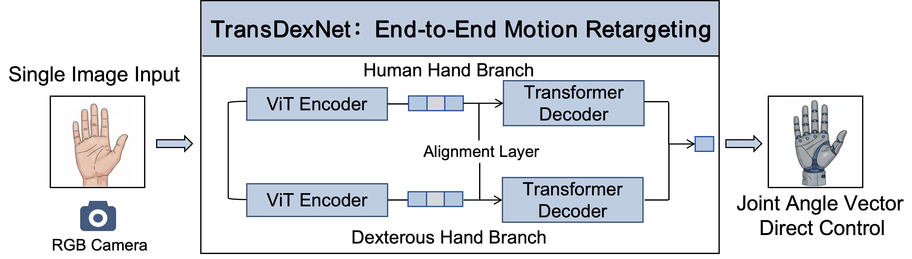
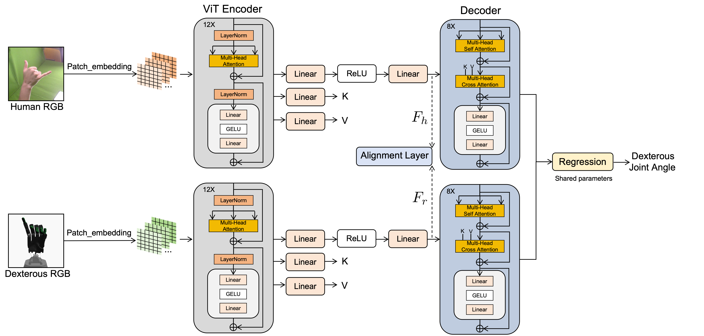

Dexterous hand teleoperation is becoming increasingly common, yet existing methods rarely provide both efficiency and convenience. The core challenge is to achieve motion retargeting from the human hand to a dexterous hand. To address this, we introduce TransDexNet, an end-to-end vision-based motion retargeting architecture for dexterous hands. Equipped with a Vision Transformer backbone, it takes a single RGB image of a human hand and directly regresses the joint angles of a dexterous hand without any intermediate pose estimation. The architecture employs dual branches bridged by an alignment layer to close the gaps in degrees of freedom (DoFs), geometry, and kinematics between the human and dexterous hands, enabling domain-invariant latent features. To train TransDexNet, we built a dataset named TransDexData, consisting of 91,000 RGB images of human hands paired with the corresponding dexterous hand RGB images and joint angles. In evaluation, the proposed network achieves an average joint angle error of 0.076 rad. Both simulation and real-world experiments demonstrate accurate and efficient performance.

A monocular RGB camera captures the human hand in real time and feeds the image directly into TransDexNet. The network extracts visual features through a Transformer-based encoder and performs cross-domain feature alignment between human and robotic hand representations in a shared latent space. Based on the aligned features, the regression head predicts the target dexterous hand joint angles in a single forward pass. These predicted joint commands are then transmitted to the dexterous hand controller, enabling the robot to reproduce the human hand motion with low latency and high fidelity.

TransDexNet adopts a dual-branch Transformer architecture to learn the mapping between human hand images and dexterous hand joint configurations. Two independent Vision Transformer (ViT) backbones encode images of the human hand and the robot hand, respectively, extracting high-level visual representations in each domain. An alignment layer is then applied to synchronize their latent features within a shared embedding space, effectively reducing the domain gap. The aligned features are further processed by a Transformer decoder to refine feature relationships and enhance representation consistency. Finally, a shared regression head directly predicts the 22-dimensional joint angles of the dexterous hand, enabling accurate and efficient end-to-end motion retargeting from RGB images.
@ARTICLE{TransDexNet2026,
author = {Jiaying Tan and Qing Gao and Yuanchuan Lai},
title = {TransDexNet: Vision-Based Dexterous Hand Teleoperation via Cross-Domain Feature Alignment},
journal = {IEEE International Conference on Robotics and Automation (ICRA)},
year = {2026},
note = {Corresponding author: Qing Gao(gaoqing2@mail.sysu.edu.cn)},
address = {Shenzhen, China}
}